Core Area · Infrastructure
Trusted Canadian AI infrastructure for applied innovation.
This core area develops staged Canadian-hosted infrastructure capacity for applied AI testing, responsible deployment, ALEBEX AI, incubated ventures, and selected partner projects.
The trust and deployment backbone for applied AI.
AIC's infrastructure strategy is not only about hardware. It is about giving applied AI projects a trusted pathway for testing, hosting, data-handling controls, and deployment planning in a Canadian context.
Trust matters in AI deployment
Organizations need practical ways to manage data residency, security, governance, hosting, and operational control as AI adoption grows.
Projects that need responsible capacity
Built for AIC applied research, ALEBEX AI, incubated ventures, SME workflows, and selected partner deployments that require stronger trust and control.
Deployment pathways
Outputs include Canadian-hosted deployment planning, infrastructure partnerships, testing environments, data-handling controls, and compute access pathways.
Transparent about where we are.


Why this matters to AIC's AI platform.
- Support Canadian-hosted deployment pathways
- Strengthen data residency and operating control
- Support applied AI testing and pilots
- Provide infrastructure pathways for incubated ventures
- Support ALEBEX AI and voice workflow development
- Provide Canadian-hosted options where data residency, trust, and operating control matter
Where infrastructure connects to the ecosystem.
ALEBEX AI
Infrastructure supports responsible voice AI, agentic workflows, testing, and deployment readiness.
Explore ALEBEX AI → PartnershipInfrastructure Partnership
Discuss Canadian-hosted AI deployment, testing environments, data-handling controls, or partner infrastructure needs.
Discuss partnership →